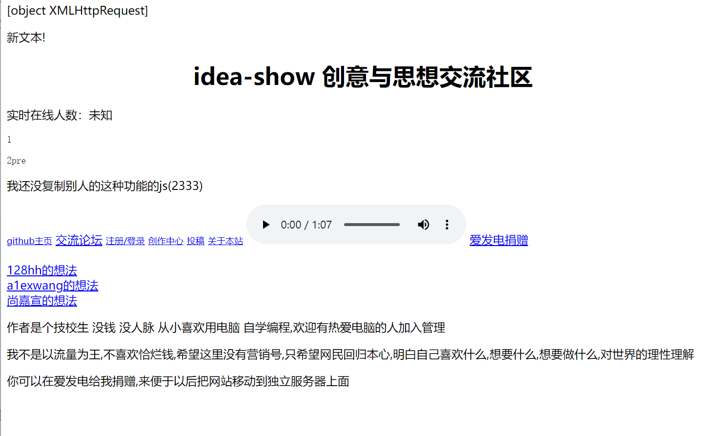
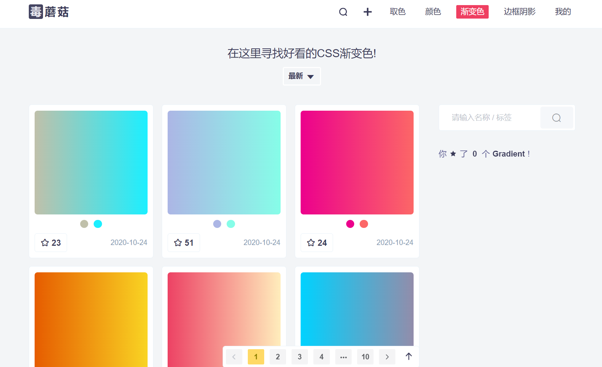
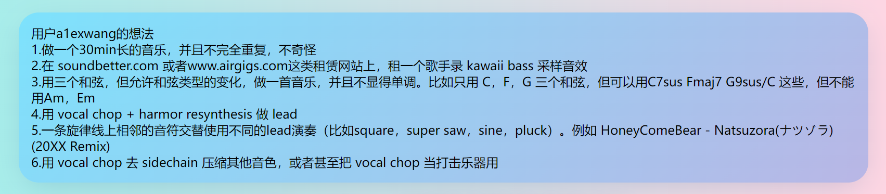

1、初步的CSS美化与内容呈现 (2022.10.23)
下图是最终结果：
/1、初步的CSS美化与内容呈现 (2022.10.23)/assets/image-20221029205512-tga61zx.png "忽略最后的“名言警句”") 忽略最后的“名言警句”
忽略最后的“名言警句” 现代的网页一般都会采用圆角+渐变色的设计，所以我的CSS美化思路也是尽可能加入圆角和渐变色。
虽然我翻了一圈没找到这种风格的网站，但是我就是觉得圆角加渐变色很好看
首先看看原始的页面长什么样：
有亿点简陋
我们从上往下看，首先映入眼帘的是一串神秘的代码"[object XMLHttpRequest]"。稍加思考就能猜到大概率是XHR的东西(置顶的想法)在呈现的时候出了点差错，直接把object输出到了网页里。当然咱们的主要目的是CSS美化，这个小问题就浅浅地删掉对应输出语句来修复吧。
现在开始第一个板块的CSS编辑——置顶？想法盒子
原始页面直接在JS里面用CreateElement把内容插进去，这可不是咱常用的方法。
为了更方便地掌控它的样式，我们还是改为固定一个div，然后用js动态修改这个div内容的模式吧。下面来一段code:
html
<div id="user_ideas">
</div>
tip: 在支持的编辑器内可以这样快速输入以上内容 div#user_ideas
javascript
//从github读取txt文件
function my_load()
{
var user_ideas = document.getElementById("user_ideas")
var request = new XMLHttpRequest()
request.open("get","ideas.txt",true)
request.onload=function()
{
if (request.readyState===request.DONE)
{
if(request.status===200)
{
var final_content = request.responseText.replaceAll("\n", "<br>")
user_ideas.innerHTML = final_content
}
}
}
request.send()
}
myload()
下面来解释一下上面的JS代码。首先我们通过id获取了我们在上面定义的一个用于存放用户想法的div，并把它赋值给了一个变量以便后续使用。然后我们创造了一个XHR实例来获取我们设置好的ideas.txt里面的数据。最后是一个判断，当成功获取内容时，把获取到的内容放进我们刚才定义好的想法盒子内部。
在这里有一点需要注意，因为我们在txt，或者是一般的文本文件里面换行符都是\n(看不到)。而HTML里面的换行是<br>标签，所以我们需要把文本里面所有的\n都替换为<br>才能实现换行的效果。
在得到内容后，当然是喜闻乐见的样式编辑环节。我这次用到了一个比较不错的网站，可以找到一些看起来不错的渐变配色。当然也可以自己配，或者是抄其他网站。
应该有更好的配色网站
下面上CSS代码:
css
#user_ideas
{
box-shadow: 0 10px 40px -10px rgba(0,64,128,.2);
border-radius: 1.6em;
background-image: linear-gradient(-225deg, #7DE2FC 0%, #B9B6E5 100%);
padding: 1em;
margin: 1em;
}
效果:
不包括背景
上文的css代码中，box-shadow表示阴影，border-radius则是圆角的半径，background-image为背景图像，这里设置的是渐变色，padding和margin分别是内边距和外边距。
虽然看起来有点花里胡哨，但是不用心去欣赏的话还是感觉挺不错的。
接下来就是给标题上绚丽的颜色了！
先上图
紫红交融的炫酷颜色直叫人眼前一亮。如上文一样的设计风格，渐变色+阴影。渐变色是从那个配色网站上面取的，但是自己可以微调一下。下面上css代码。
css
.title
{
background: linear-gradient(-225deg, #231557 0%, #44107A 29%, #FF1361 67%, #FFF800 100%);
background-clip: text; /* 只在有文字的区域显示背景 */
color: transparent; /* 文字颜色设为透明色 */
text-shadow: 3px 5px 24px #44107A;
text-align: center;
}
目前css里面并不能直接给文字设置渐变色，但是我们可以使用一些技巧来达到渐变色文字的效果。上面的css代码里首先把背景剪切到了文字的区域（即只在有文字的区域显示背景），然后再把文字的颜色设置为了透明，这样文字呈现的颜色就是背景的颜色，而背景可以设置为渐变色，这样就达到了给文字设置渐变色的目的。